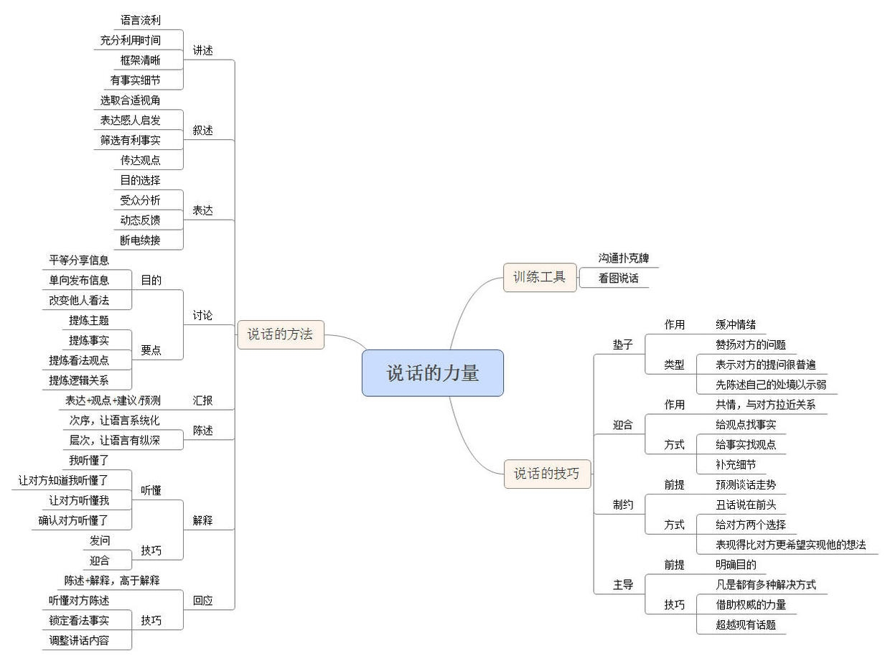

每日拆书.10《说话的力量》
本书是我读的沟通领域的第一本中国人写的书。出乎意料的是，本书写得极其好。
主要表现在层级架构非常合理，分为三个部分。同时，内容的逻辑性也很强，从基础到技巧，从理论到应用，从知识到练习，都恰如其分地平衡了。
本书涵盖了日常生活与正式场合的沟通，两部分都有详细的解释。相比之前拆的书大都只注重一个方面，的确有一定优势。
总而言之，如果你想从基础打起，清楚各个场景的沟通要素及对应办法，本书值得一读。

本书分为三个部分，简述如下：
第一部分将沟通分为了八个基本场景——讲述、叙述、表达、讨论、回报、陈述、解释、回应，并剖析了各个场景的基本组成和对应技巧或要素。这部分类似于基本功；
第二部分讲解了沟通的四个技巧——垫子、迎合、制约以及主导，分别解释了各个技巧的目的和作用，并指出了各自的应用场景，使之可以迅速运用在沟通之中。这部分可以理解为进阶。
第三部分则列举了两个练习说话的方法，扑克牌法和看图说话。通过这两种方式来提高自己的表达能力。这部分则相当于练习场。
拆书整理 思维导图 时，重点放在了一二部分，对个别部分稍加整理。
本书讲述了四个说话技巧，可以让我们一步步主导话语权，最终达到目标。分列如下：
垫子起到的是缓冲作用。在我们谈话的开始，基本都是从问答开始的，这时候为了避免陷入一问一答的紧张状态，则需要垫子来缓和气氛，建立起双方的初步信任，为进一步的沟通做好准备。
垫子的类型主要分为三种：
1、赞扬问问题的人，简单说就是夸他问题问得好。
对方问了一个问题，如果仅仅是回答这一问题，无论是否符合对方预期，都会陷入尴尬——符合，没下文；不符合，关系僵化。
而赞扬了对方，则一方面可以缓和情绪，另一方面留下了充足的空间和时间，使对方提供更多信息，这就为接下来的谈话做好了铺垫。
2、说他的问题很普遍，具有代表性。
这个垫子的功效是将问题普遍化，则对方的心理就会有所松懈，同时还觉得自己问得有水平。这也就缓和了紧张的氛围。
3、回答之前，讲述自己的处境。
这个垫子的核心在于示弱，可以赢得对方好感，并降低对方对答案的质疑。当然，示弱并不代表自己弱小，只有强大的人才会承认自己的弱小。放低姿态可以降低期许，这样当你做出好的回答时，则会使对方出乎意料。这样就将自己放在了一个优势地位。
迎合不是溜须拍马，而是通过表达对对方的理解，以获得对方的喜欢和认同。或者也可以将之称为，换位思考。在对方提出问题之后，首先迎合以降低他的心理戒备，同时使对方放下情绪，进入理性沟通。
迎合的方式分为三种：
1、给观点找事实
就是说当对方表现出一种看法、观点时，恰如其分地提供相应的事实以表达赞同。很容易就会获得对方的信任。
2、给事实找观点
与上同理。
3、补充细节
在事实和观点都有的情况下，则可以补充细节，表达感同身受，创造出一种你们是同类的感觉。
“制”可以理解为制度，也可以理解为控制。在沟通时，主动划定一个范围来约束，就是制约。可以迅速获得谈话的优势地位，为主导谈话做好准备。
为了达到制约的目的，首先要做到的是准确预测谈话的走势。否则不按对方的预期走，反而会引起对方的戒备和不信任。
制约主要可以分为三种方式：
1、提前说出最差的可能性
丑话说在前头，会降低对方预期。在你做好之后对方反而会非常满意。这一点与垫子中的“表述处境”有异曲同工之妙。
2、给对方一个选择
当你给出一个选择时，对方既能感受到你的尊重，又会忽略其他的选项。这时，你就全面掌握了谈话的进程了。
3、表现得比对方更希望实现他的想法
这是延伸并强化了对方的期待，于是对方接下来的要求就会有所缓和，情绪也会降低。这时就可以引导对方进入理性对话的阶段了。
在对话中，自然而然地控制主题和节奏，以及谈话的趋势和走向，会令沟通的效果增加数倍。
主导对话的前提是明确自己的目的。只有牢记目的，才能时时注意自己的行为，以调整战术来控制节奏，最终实现目的。
主导对话有三个技巧：
1、凡事都有多种解决方式
交谈时，考虑对方的出发点，然后将范围扩大。多种角度来回应对方的问题，就可以完全吸引对方，此时你就占据了主动。
2、借助权威的力量
人们对权威的迷信和盲从是极其普遍的（这一点我们在拆 《影响力》 一书时略有提及），所以搬出专家来证明自己的言论，无疑具有极高的说服力。
3、超越现有话题，升华至更高层面
我们针对同一事物进行讨论时，一方将话题提升至更高的层面，来表述自己的看法，对方的格局自然会相形见绌，此时主动权也就转移至你的身上了。
以上四个技巧，同时也是四个步骤——垫子、迎合、制约、主导，全面地讲解了我们如何从开始的平等对话（或者处于弱势）到最终主导对话。
当然，技巧也只是技巧，只有多加练习，才能真正提升你的谈话水平，助你熟练主导对话。
PS:写了三十天，深觉读书至少，所以自今天始，专注于某个领域刷书。每天一本，持续21天，并做思维导图和读书笔记。为什么要说刷书呢？因为每天一本书无法做到认真研读，加之非严肃科学类的领域，市面上的书籍大都具有互补性，刷书比读书获取的信息量更大更快；
PPS:第一次主题就定为“沟通交流”，提升自己沟通技巧，也权作初步练习；
PPPS:明天拆《看入人里，看出人外》。
1/30/16